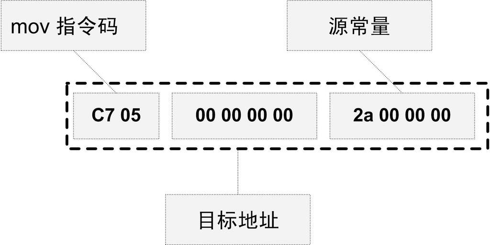

2.4 模块拼装——静态链接
程序设计的模块化是人们一直在追求的目标，因为当一个系统十分复杂的时候，我们不得不将一个复杂的系统逐步分割成小的系统以达到各个突破的目的。一个复杂的软件也如此，人们把每个源代码模块独立地编译，然后按照需要将它们"组装"起来，这个组装模块的过程就是链接（Linking）。链接的主要内容就是把各个模块之间相互引用的部分都处理好，使得各个模块之间能够正确地衔接。链接器所要做的工作其实跟前面所描述的"程序员人工调整地址"本质上没什么两样，只不过现代的高级语言的诸多特性和功能，使得编译器、链接器更为复杂，功能更为强大，但从原理上来讲，它的工作无非就是把一些指令对其他符号地址的引用加以修正。链接过程主要包括了地址和空间分配（Address and Storage Allocation）、符号决议（Symbol Resolution）和重定位（Relocation）等这些步骤。
符号决议有时候也被叫做符号绑定（Symbol Binding）、名称绑定（Name Binding）、名称决议（Name Resolution），甚至还有叫做地址绑定（Address Binding）、指令绑定（Instruction Binding）的，大体上它们的意思都一样，但从细节角度来区分，它们之间还是存在一定区别的，比如“决议”更倾向于静态链接，而“绑定”更倾向于动态链接，即它们所使用的范围不一样。在静态链接，我们将统一称为符号决议。
最基本的静态链接过程如图2-8所示。每个模块的源代码文件（如.c）文件经过编译器编译成目标文件（Object File，一般扩展名为.o或.obj），目标文件和库（Library）一起链接形成最终可执行文件。而最常见的库就是运行时库（Runtime Library），它是支持程序运行的基本函数的集合。库其实是一组目标文件的包，就是一些最常用的代码编译成目标文件后打包存放。关于库本书的后面还会再详细分析。

图2-8 链接过程
我们认为对于Object文件没有一个很合适的中文名称，把它叫做中间目标文件比较合适，简称为目标文件，所以本书后面的内容都将称Object文件为目标文件，很多时候我们也把目标文件称为模块。
现代的编译和链接过程也并非想象中的那么复杂，它还是一个比较容易理解的概念。比如我们在程序模块main.c中使用另外一个模块func.c中的函数foo()。我们在main.c模块中每一处调用foo的时候都必须确切知道foo这个函数的地址，但是由于每个模块都是单独编译的，在编译器编译main.c的时候它并不知道foo函数的地址，所以它暂时把这些调用foo的指令的目标地址搁置，等待最后链接的时候由链接器去将这些指令的目标地址修正。如果没有链接器，须要我们手工把每个调用foo的指令进行修正，则填入正确的foo函数地址。当func.c模块被重新编译，foo函数的地址有可能改变时，那么我们在main.c中所有使用到foo的地址的指令将要全部重新调整。这些繁琐的工作将成为程序员的噩梦。使用链接器，你可以直接引用其他模块的函数和全局变量而无须知道它们的地址，因为链接器在链接的时候，会根据你所引用的符号foo，自动去相应的func.c模块查找foo的地址，然后将main.c模块中所有引用到foo的指令重新修正，让它们的目标地址为真正的foo函数的地址。这就是静态链接的最基本的过程和作用。
在链接过程中，对其他定义在目标文件中的函数调用的指令须要被重新调整，对使用其他定义在其他目标文件的变量来说，也存在同样的问题。让我们结合具体的CPU指令来了解这个过程。假设我们有个全局变量叫做var，它在目标文件A里面。我们在目标文件B里面要访问这个全局变量，比如我们在目标文件B里面有这么一条指令：
movl $0x2a, var
这条指令就是给这个var变量赋值0x2a，相当于C语言里面的语句var = 42。然后我们编译目标文件B，得到这条指令机器码，如图2-9所示。

图2-9 传送指令
由于在编译目标文件B的时候，编译器并不知道变量var的目标地址，所以编译器在没法确定地址的情况下，将这条mov指令的目标地址置为0，等待链接器在将目标文件A和B链接起来的时候再将其修正。我们假设A和B链接后，变量var的地址确定下来为0x1000，那么链接器将会把这个指令的目标地址部分修改成0x10000。这个地址修正的过程也被叫做重定位（Relocation），每个要被修正的地方叫一个重定位入口（Relocation Entry）。重定位所做的就是给程序中每个这样的绝对地址引用的位置“打补丁”，使它们指向正确的地址。